Логистика · UX/UI дизайн
Платформа управления перевозками
Как сделать сложные грузоперевозки понятнее. Я проектировал структуры и взаимодействия, которые помогают просматривать грузы, разбираться в отдельной перевозке и управлять связанными записями в модулях платформы.
- Клиент
- Конфиденциально (NDA)
- Роль
- Продуктовый UX/UI-дизайнер
- Платформа
- Веб · адаптивный мобильный
- Период
- июн 2024 — апр 2025
- Сфера
- Логистика
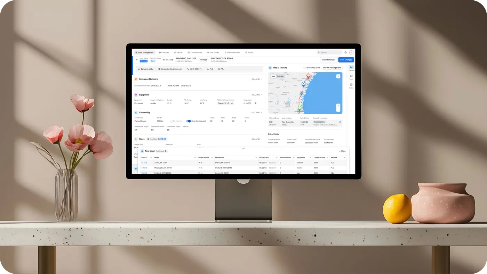
Обзор
Как сделать сложные грузоперевозки понятнее
Я был продуктовым UX/UI-дизайнером платформы управления перевозками, которая объединяет грузы, записи клиентов и перевозчиков и административные сценарии. Я превращал требования в структуры интерфейса, прототипы и согласованные взаимодействия в связанных модулях.
Проект закрыт NDA, поэтому в кейсе показаны отдельные дизайн-задачи без названия клиента и конфиденциальных данных. Примеры посвящены десктопному рабочему пространству; адаптивный мобильный интерфейс для полевых операций тоже входил в проект.
Задача
Одни и те же данные, много способов работы
Пользователь может просматривать список грузов, замечать исключение, разбираться в конкретной перевозке, обновлять запись или проверять клиента и перевозчика за ней. Каждой задаче нужен свой уровень детализации. Дизайн вели три вопроса:
- 01
Что пользователь должен видеть, когда просматривает много записей?
- 02
Какая информация относится к просмотру одного груза?
- 03
Как рабочему пространству подстраиваться под разные задачи и не терять согласованность?
Процесс
Сначала структура, потом детали
Я начал с того, что определяет остальную платформу: навигация, системные элементы управления, иерархия информации и визуализация статусов.
- 01
Структуры
Навигация, элементы управления, иерархия и визуализация статусов определены до экранов.
- 02
Проверка
Опросы пользователей и низкодетальные прототипы проверили ключевые сценарии.
- 03
Тестирование
Интерактивный высокодетальный прототип прошёл юзабилити-тестирование; выводы повлияли на релиз.
01 — Loadboard
Плотно намеренно, управляемо благодаря дизайну
Loadboard — центральный модуль для просмотра грузов и управления ими. Людям нужно сравнивать много записей, не открывая каждую, поэтому плотность — осознанный выбор. Задача была в том, чтобы сделать её управляемой с помощью структуры, фильтров и настройки.
- 01
Представления, которые задаёт пользователь
Выбор и порядок колонок, закрепление ключевых полей, представление по умолчанию. Поля сгруппированы и доступны для поиска.
- 02
Иерархия в плотных строках
Выравнивание, типографика, подписи и компактные маркеры разделяют идентификаторы, статусы, места и даты; статус и приоритет получают больший вес.
- 03
Выбор и действие
Выбор строк открывает контекст действий прямо в таблице. Состояния, меню, редактируемые ячейки и диалоги работают как единая модель взаимодействия.
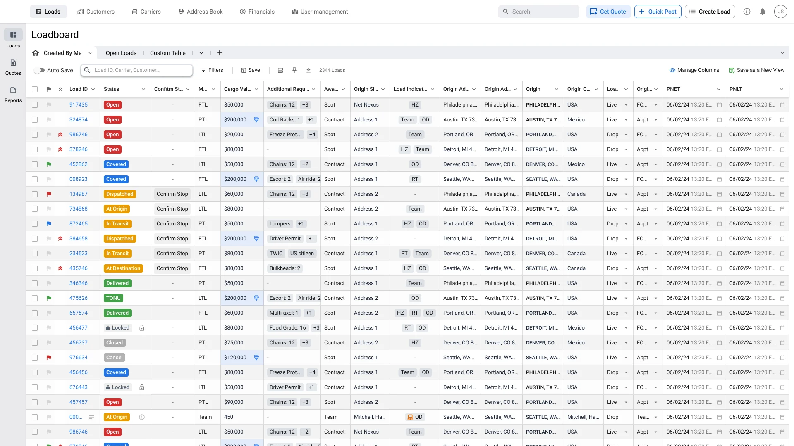
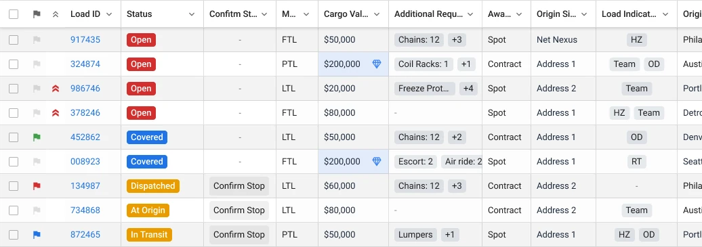
02 — Статус и риск
Прогресс и срочность — разные сигналы
Статусы показывают, где находится груз. Маркеры приоритета, флаги и индикаторы риска показывают, что требует внимания.
Риск сочетает цвет с подписями, иконками и контекстом, поэтому смысл не зависит только от цвета. Одни и те же сигналы повторяются в строках, деталях и связанных компонентах.
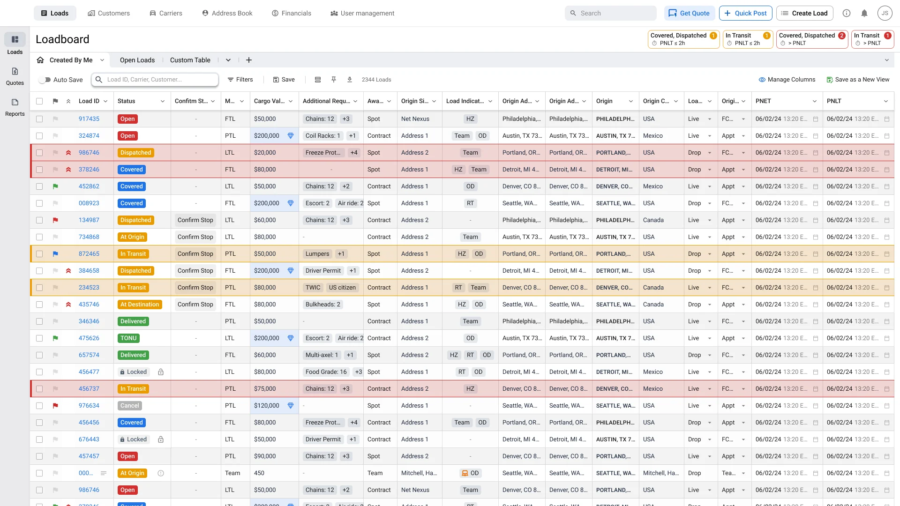
03 — Детали груза
От сравнения к изучению
Loadboard нужен для просмотра и сравнения; превью — чтобы разобраться в одной перевозке, от компактного обзора до операционных деталей. Карта маршрута даёт пространственную картину, а последовательность остановок — хронологию того же рейса. Отдельное действие редактирования разделяет просмотр записи и её изменение.
- 01
Статус и финансовая сводка
- 02
Маршрут и отслеживание
- 03
Требования к перевозке
- 04
Информация о перевозчике
- 05
Заметки и документы
- 06
Последовательность остановок
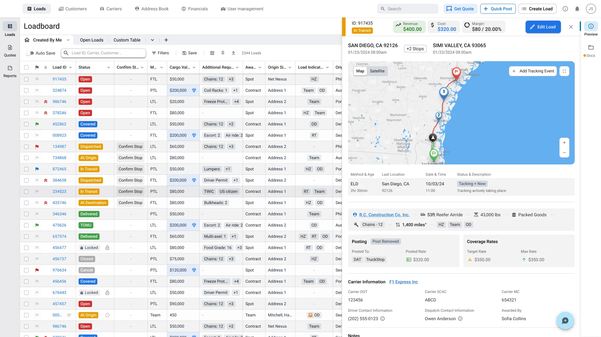

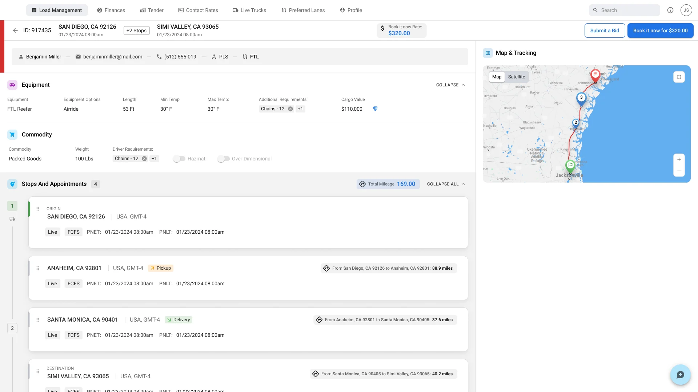
04 — Профили клиентов
Отношения, которые растут со временем
Контакты, платёжные данные, предпочтения, кредитные лимиты и ответственный за аккаунт собраны в одном профиле. Отдел продаж начинает с небольшого набора данных и дополняет его по мере развития отношений, поэтому для быстрого старта не нужны все данные аккаунта.
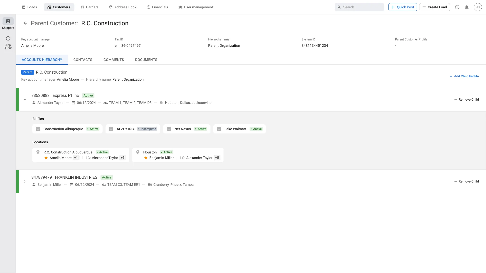
05 — Профили перевозчиков
Чёткая иерархия вместо одной длинной формы
Соответствие требованиям, платёжные данные и данные об отношениях разделены на понятные области. Это даёт единообразный доступ к данным перевозчика во всех брокерских сценариях и переиспользуемую структуру для записей перевозчиков.
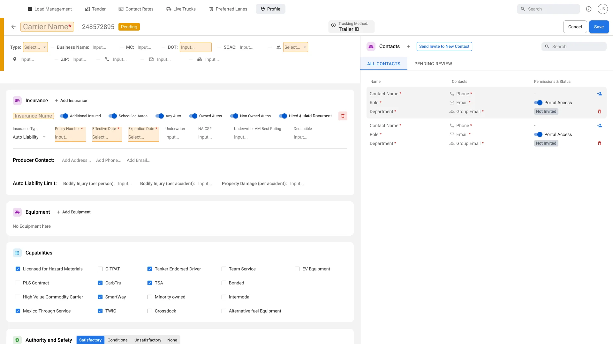

06 — За пределами Loadboard
Работа вокруг груза
Списки в модуле управления грузами дают отфильтрованный вид открытых и активных грузов со статусом, оборудованием и ставками. Раздел тендеров собирает запросы, требующие действия, а экран ставки ставит данные о ставке рядом с действиями «забронировать» или «сделать ставку». Экран корректировок переносит финансовую сторону груза в ту же систему.


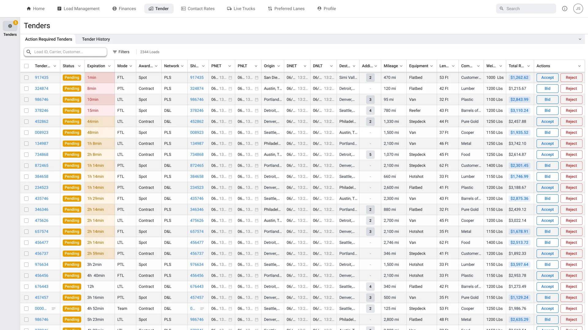


07 — Управление пользователями
Доступ и ответственность, понятные с первого взгляда
Пользователи, роли и разрешения собраны в отдельной области. Структурированные определения ролей и данные об активности дают контекст для административных решений. Работа посвящена ясности этих взаимодействий; за соблюдение безопасности отвечает сама система.

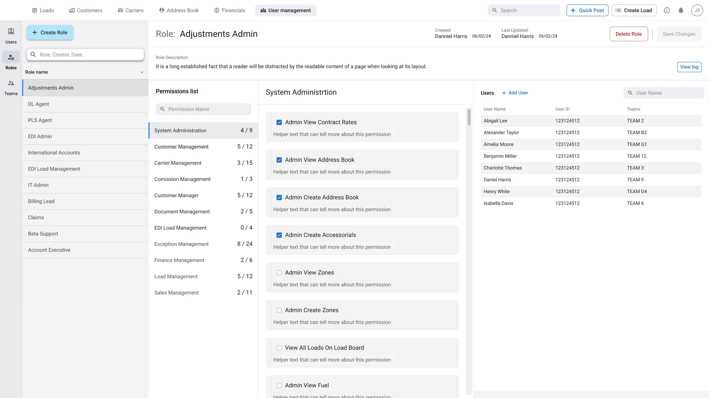
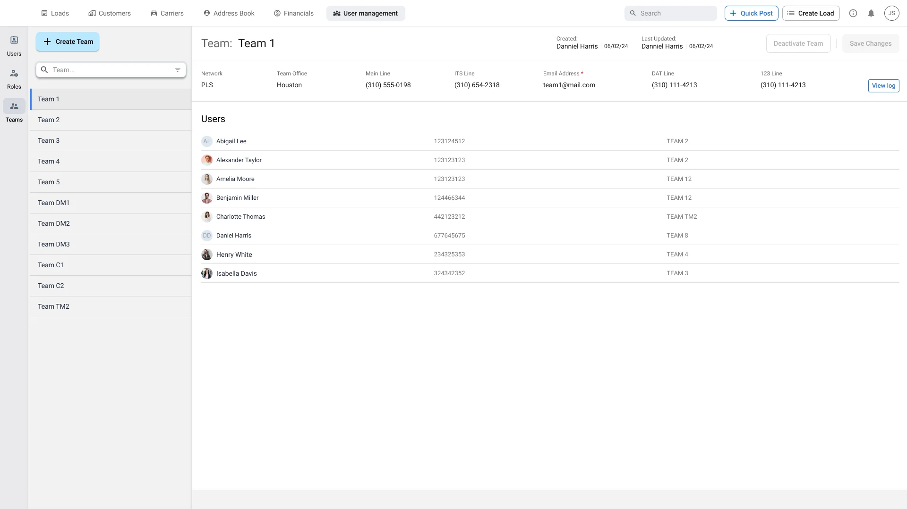
08 — Дизайн-система
Единый набор паттернов для всех модулей
Формы, таблицы, меню, диалоги, навигация и статусная информация используют общие паттерны, с вариантами, стилизацией через переменные и поддержкой тем. Знакомые элементы управления делают модули единым продуктом, поэтому силы дизайна уходят на предметные вопросы: какая информация важна, как её сгруппировать и какое действие следует дальше.
Итоги
Плотность против ясности
Показывать меньше — не всегда ответ: в некоторых сценариях людям нужно сравнивать много записей одновременно. Поэтому дизайн опирается на настраиваемые представления, единые сигналы и понятный переход от обзора к деталям.
Проект сформировал мой подход к корпоративным продуктам: понять операционный контекст, задать переиспользуемые правила взаимодействия и позволить структуре рабочего пространства поддерживать разные задачи.
Что я спроектировал
Единое десктопное рабочее пространство для грузоперевозок: настраиваемый Loadboard, подробное превью груза, модули клиентов, перевозчиков и управления пользователями и общая библиотека компонентов, которая их связывает.
Другие кейсы